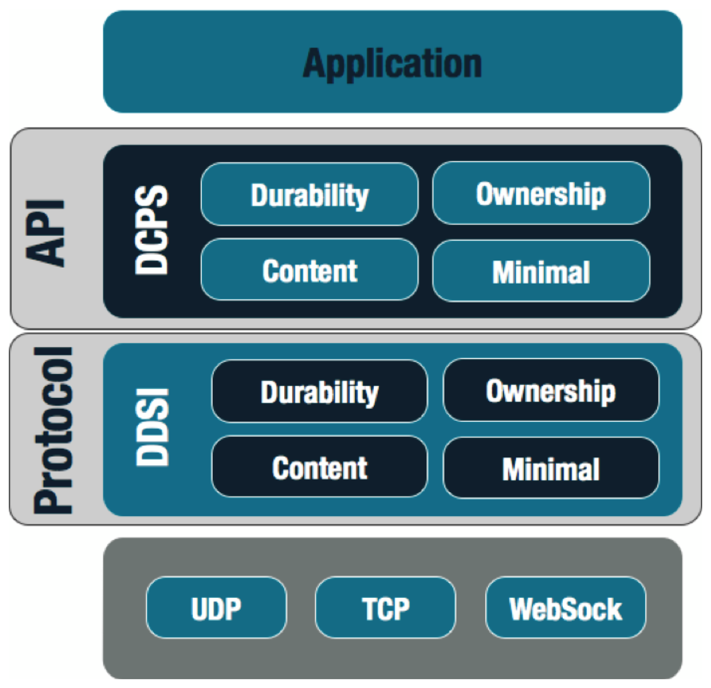
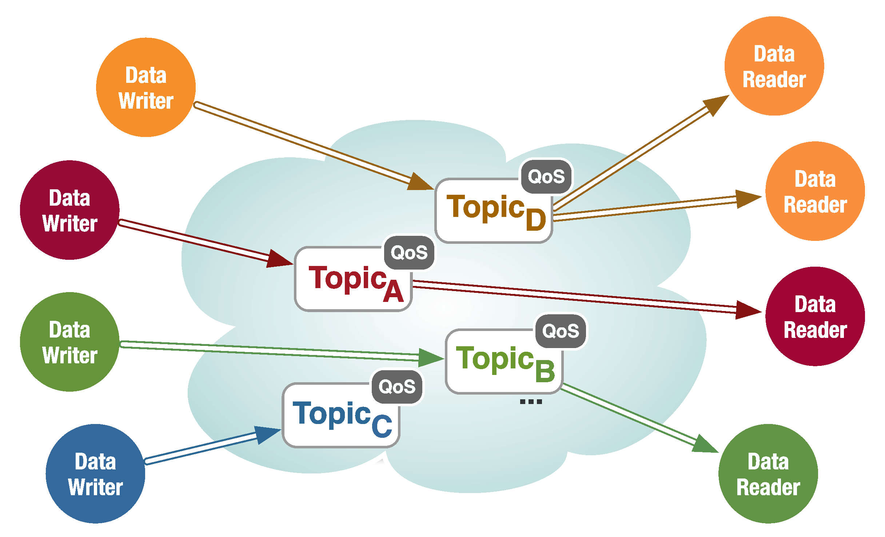

Foundations¶
The Data Distribution Service¶
Whether you are an experienced programmer or a novice, it is highly likely that you have already experienced some form of Pub/Sub (Publish/Subscribe) – an abstraction for one-to-many communication that provides anonymous, decoupled, and asynchronous communication between a publisher and its subscribers. ‘Pub/Sub’ is the abstraction behind many of the technologies used today to build and integrate distributed applications, such as social applications, financial trading, etc., whilst keeping their component parts loosely-coupled and independently evolvable.
Various implementations of the Pub/Sub abstraction have emerged through time to address the needs of different application domains. DDS (Data Distribution Service) is an OMG (Object Management Group) standard for Pub/Sub introduced in 2004 to address the data-sharing needs of large scale mission- and business-critical applications. Today DDS is one of the hot technologies at the heart of some of the most interesting IoT (Internet of Things) and I2 (Industrial Internet) applications.
To the question ‘What is DDS?’ one answer is
it is a Pub/Sub technology for ubiquitous, polyglot, efficient and secure data sharing.
Another way of answering this question is to say that
DDS is Pub/Sub on steroids.
The OMG DDS Standard¶
The DDS standards family is comprised of the DDS v1.4 API (see OMG DDS 2015) and the DDSI v2.2 (see OMG DDSI 2014), as illustrated in The DDS Standard below.
The DDS Standard
{kind=link}
The DDS API standard guarantees source code portability across different vendor implementations, while the DDSI standard ensures on-the-wire interoperability between DDS implementations from different vendors.
The DDS API standard defines several different profiles (see The DDS Standard) that enhance real-time Pub/Sub with content filtering and queries, temporal decoupling and automatic fail-over. Additionally, APIs are available in C, C++, C#, Java, JavaScript, CoffeeScript, Scala and more, that can be mixed in deployment as appropriate to the user application.
The DDS standard was formally adopted by the OMG in 2004 and today it has become the established Pub/Sub technology for distributing high volumes of data, dependably and with predictable low latency in applications such as Smart Grids, Smart Cities, Defense, SCADA, Financial Trading, Air Traffic Control and Management, High Performance Telemetry and Large Scale Supervisory Systems. It is also one of the reference communication architectures as defined by the Industrial Internet Consortium for the Internet of Things (IoT).
DDS in a Nutshell¶
To explain DDS this Tutorial will develop a ‘real-world’ example that is straightforward enough that it can be understood easily yet complex enough that it will illustrate all of the major features of a DDS system.
The example is a temperature monitoring and control system for a very large building.
Each floor of the building has several rooms, each of which is equipped with a set of temperature and humidity sensors and one or more conditioners. The application is intended to perform monitoring for all the elements in the building as well as temperature and humidity control for each room.
This application is a typical distributed monitoring and control application in which there is data telemetry from several sensors distributed throughout a space, and processing of the sensor data results in actions being applied to actuators (the conditioners).
Global Data Space¶
The key abstraction at the foundation of ‘Global Data Space’ is a fully-distributed GDS. It is important to remark that the DDS specification requires the implementation of the Global Data Space to be fully distributed in order to avoid single points of failure and bottlenecks.
The Global Data Space
{kind=link}
Publishers and Subscribers can join or leave the GDS at any time, as they are dynamically discovered. The dynamic discovery of Publishers and Subscribers is performed by the GDS and does not rely on any kind of centralized registry like those found in other Pub/Sub technologies such as the Java Message Service (JMS).
Finally, the GDS also discovers application-defined data types and it propagates them as part of the discovery process.
The essential point here is that the presence of a GDS equipped with dynamic discovery means that when a system is deployed no configuration is needed. Everything is automatically discovered and data begins to flow.
Moreover, since the GDS is fully distributed there is no need to fear that the crash of some server having an unpredictable impact on system availability. In DDS there is no single point of failure, so although applications can crash and re-start, or disconnect and re-connect, the system as a whole continues to run.
Domain Participant¶
To do anything useful a DDS application needs to create a Domain Participant (DP). The DP gives access to the GDS – called domain in DDS applications.
The listing Creating a Domain Participant shows how a Domain Participant can be created; notice that domains are identified by integers.
// create a Domain Participant, -1 defaults to value defined in configuration file
dds::domain::DomainParticipant dp(-1);
// Creates a domain participant in the domain identified by
// the number 18
dds::domain::DomainParticipant dp2(18);
Topics¶
In DDS, the data flowing from Publishers to Subscribers belongs to a Topic, which represents the unit of information that can be produced or consumed.
A Topic is defined as a triad composed of
- a type,
- a unique name,
- and a set of Quality of Service (QoS) policies
which, as will be explained in detail later in this Tutorial, are used to control the non-functional properties associated with the Topic.
For the time being it is enough to say that if the QoSs are not explicitly set, then the DDS implementation will use some defaults prescribed by the standard.
Topic Types can be represented with the subset of the OMG Interface Definition Language (IDL) standard that defines struct types, with the limitations that Any-types are not supported.
Those unfamiliar with the IDL standard can regard Topic Types as being defined with C-like structures whose attributes can be primitive types (such as short, long, float, string, etc.), arrays, sequences, unions and enumerations. Nesting of structures is also allowed.
Those who are familiar with IDL may wonder how DDS relates to CORBA. The only thing that DDS has in common with CORBA is that it uses a subset of IDL; other than this, CORBA and DDS are two completely different standards and two completely different yet complementary technologies.
Returning to the temperature control application, we are going to define topics representing the reading of temperature sensors, the conditioners and the rooms in which the temperature sensors and the conditioners are installed. The listing IDL definition of a Temperature Sensor provides an example of how the topic type for the temperature sensor might be defined.
// TempControl.idl
enum TemperatureScale {
CELSIUS,
FAHRENHEIT,
KELVIN
};
struct TempSensorType {
short id;
float temp;
float hum;
TemperatureScale scale;
};
#pragma keylist TempSensorType id
As the listing reveals, IDL structures really look like C/C++ structures, so learning to write Topic Types is usually effortless for most programmers.
Notice that the IDL definition of a Temperature Sensor also includes a #pragma keylist directive. This directive is used to specify keys. The TempSensorType is specified to have a single key represented by the sensor identifier (id attribute). At runtime, each key value will identify a specific stream of data; more precisely, in DDS each key-value identifies a Topic instance. For each instance it is possible to observe the life-cycle and learn about interesting transitions such as when it first appeared in the system, or when it was disposed.
Keys, along with identifying instances, are also used to capture data relationships as would be done in traditional entity relationship modeling.
Keys can be made up of an arbitrary number of attributes, some of which could also be defined in nested structures.
After the topic type has been defined and the IDL pre-processor nas been run to generate the language representation required for the topics, a DDS topic can be programmatically registered using the DDS API by simply instantiating a Topic class with the proper type and name.
// Create the topic
dds::topic::Topic<tutorial::TempSensorType> topic(dp, "TTempSensor");
Reading and Writing Data¶
Now that topics have been specified, this Tutorial will demonstrate how to make a Topic flow between Publishers and Subscribers.
DDS uses the specification of user-defined Topic Types to generate efficient encoding and decoding routines as well as strongly-typed DataReaders and DataWriters.
Creating a DataReader or a DataWriter is straightforward, as it simply requires the construction of an object by instantiating a template class with the Topic Type and the passing of the desired Topic object.
After a DataReader has been created for a TempSensorType you are ready to read the data produced by temperature sensors distributed in your system.
Likewise, after a DataWriter has been created for the TempSensorType you are ready to write (publish) data.
The listings Writing data in DDS and Reading data in DDS show the steps required to write and read data.
// create a Domain Participant, -1 defaults to value defined in configuration file
dds::domain::DomainParticipant dp(-1);
// Create the topic
dds::topic::Topic<tutorial::TempSensorType> topic(dp, "TTempSensor");
// Create the Publisher and DataWriter
dds::pub::Publisher pub(dp);
dds::pub::DataWriter<tutorial::TempSensorType> dw(pub, topic);
// Write the data
tutorial::TempSensorType sensor(1, 26.0F, 70.0F, tutorial::CELSIUS);
dw.write(sensor);
// Write data using streaming operators (same as calling dw.write(...))
dw << tutorial::TempSensorType(2, 26.5F, 74.0F, tutorial::CELSIUS);
// create a Domain Participant, -1 defaults to value defined in configuration file
dds::domain::DomainParticipant dp(-1);
// create the Topic
dds::topic::Topic<tutorial::TempSensorType> topic(dp, "TTempSensor");
// create a Subscriber
dds::sub::Subscriber sub(dp);
// create a DataReader
dds::sub::DataReader<tutorial::TempSensorType> dr(sub, topic);
while (true) {
auto samples = dr.read();
std::for_each(samples.begin(),
samples.end(),
[](const dds::sub::Sample<tutorial::TempSensorType>& s) {
std::cout << s.data() << std::endl;
});
std::this_thread::sleep_for(std::chrono::seconds(1));
}
This first DDS application (Reading data in DDS)uses polling to read data out of DDS every second. A sleep is used to avoid spinning in the loop too fast, since the DDS read is non-blocking and returns immediately if there is no data available.
Although polling is a valid method to use, DDS supports two other ways for informing your application of data availability: listeners and waitsets.
- Listeners can be registered with readers for receiving
notification of data availability as well as several other interesting status changes such as violation in QoS.
- Waitsets, modeled after the Unix-style select call, can
be used to wait for the occurrence of interesting events, one of which could be the availability of data. I will detail these coordination mechanisms later on in this tutorial.
The code may appear slightly puzzling at first glance, since the data reader and the data writer are completely decoupled. It is not clear where they are writing data to or reading it from, how they are finding out about each other, and so on. This is the DDS magic! As explained in the very beginning of this chapter, DDS is equipped with dynamic discovery of participants as well as user-defined data types. Thus it is DDS that discovers data producers and consumers and takes care of matching them.
Ii is strongly recommended that you try to compile the code examples available online (see Appendix A) and run them on your own machine or (even better) on a couple of machines.
Try running one writer and several readers. Then try adding more writers and see what happens. Also experiment with arbitrarily- terminating readers and writers and re-starting them. This way you will see the dynamic discovery in action.
Summary¶
this first chapter has explained the abstraction behind DDS and introduced some of its core concepts. It has also shown how to write a first DDS application that distributes temperature sensors’ values over a distributed system. It needed fewer than 15 lines of code to get an application working, which shows the remarkable power of DDS.
Upcoming chapters will introduce more advanced concepts, and by the end of this Tutorial all the DDS features will have been demonstrated whilst creating a sophisticated scalable, efficient and real-time Pub/Sub application.